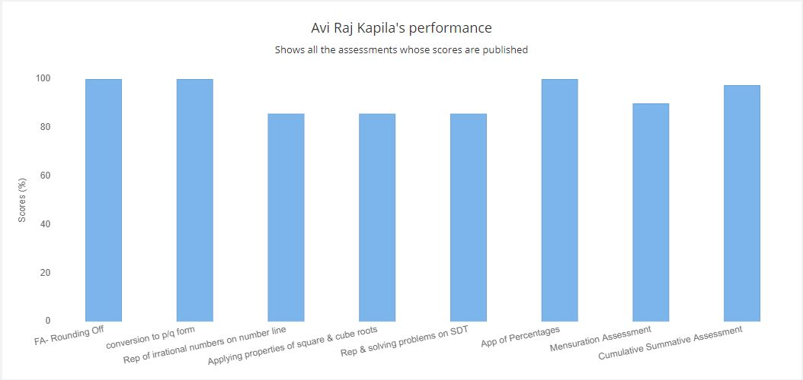
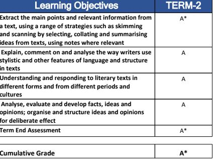
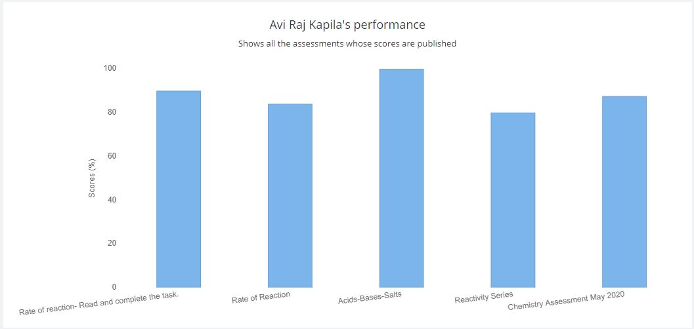
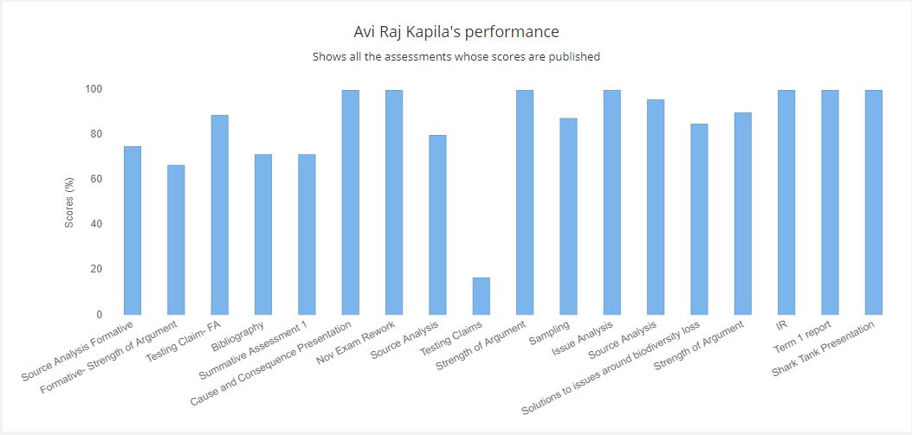
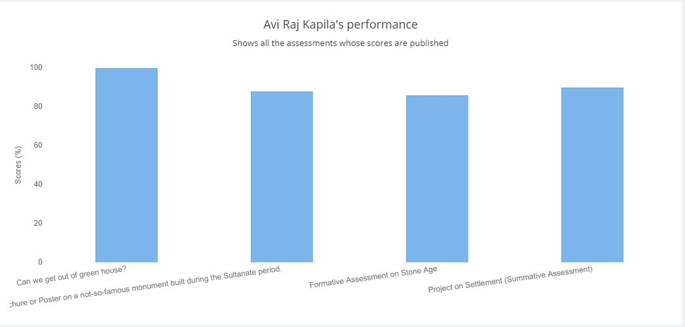
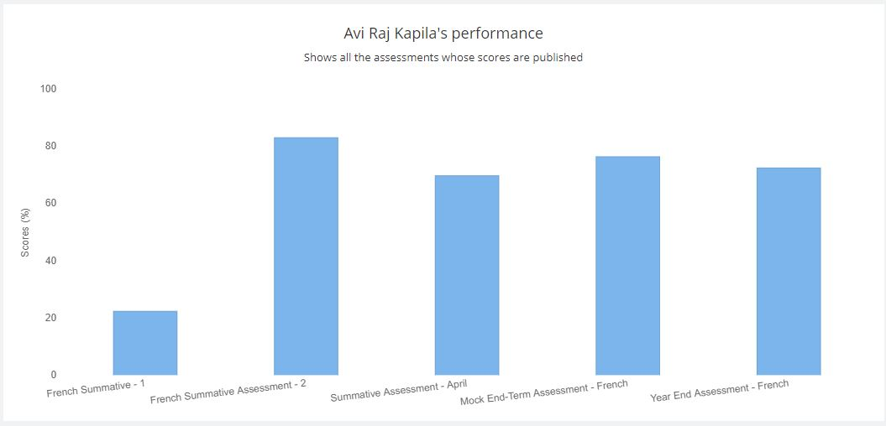
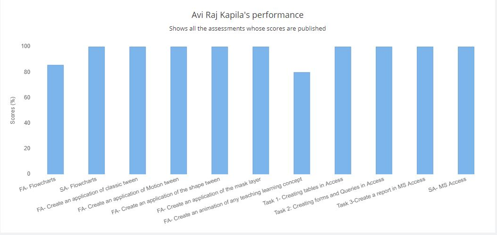
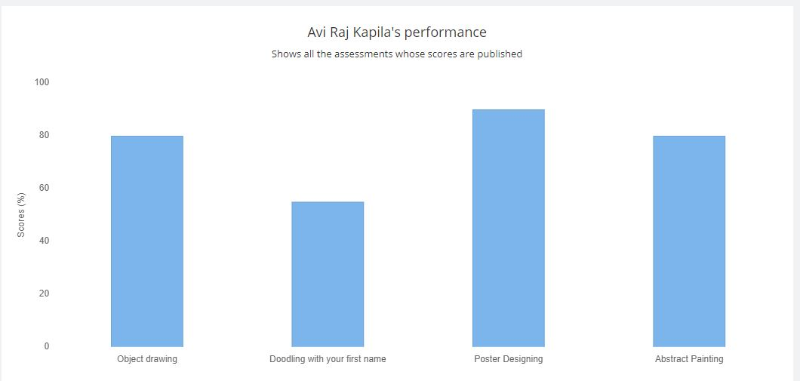

Subjects;
Maths;
Reflection; Maths in one of my favourite subjects. I like solving different mathematical problems, be it on any topic
such as Algebra, Numbers, Geometry, Mensuration, Quardinate Geometry etc. As it can alos be denoted from the graph
below, my performence in maths have been great, just that in some assessments, i make 2-3 silly errors, due to which
i am not able to get full. I plan to improve on this.

English;
Reflection; At beggening of the year, my performence in English was not that great, as this subjects
requires a lot of comprehention and analytical skills which i dint have. Despite this, I worked hard in the second term,
finally being able to achive success in most of the asighnments.

Sciences;
Reflection; Sciences is my most favourite field among all subject, specificly Physics. I show consistant interest
in the subject, and participate in class regularly. I have overall understanding of all major topics, it's just that
at some places, I forget to read a question, or makesilly mistakes, which needed to be improved upon.

Global Perspectives
Reflection; Global Perspectives was a very new subject for us. It focuses on the analytical and evaluating skills
in order to refer to sources, and study different arguments. At first, in term 1, my performence was not that great,
and I use to have a fear of the subject. Despite this, I gradually started to improve, and now if we look at my term 2
performence, it varies by great amount, showcasing my overall understanding of the subject.

Social Studies
Reflection;Social studies, though is a known, common subject, however it was also new to us. Despite this, i ventured upon the field,
exploring and learning new topics, putting in all my effort and patience. Een my performences were very decent enough.

French
Reflection;French is a subject in which i have struggled the most. My term1 performences were very bad, as my
assessments and papers were covered in red marks, which showed many mistakes, in verb conjugations, listening skills, comprehending skills, vocaulary, grammar
etc.In term2, I had started to improve, giving my best ability and work in every task, however still i have not
achieved success. I will work more hard, and give more effort, finaly achieveing excelence in this.

Ict
Reflection; ICT was not a new subject for me, as we had already faced it in 6th and 7th, however it was a subjectthat required more practice and hardwork
on my side, as I am not good in understanding the different uses of softwares and technology. We had learnt about
using different softwares like flogorithm, Photoshop, Animate, Access. In all of them, I gave my best effort,
explored them on my own, and got excellent marks. I plan to continue the same for future.

Visual Arts
Reflection- Visual arts is a subject that includes drawing, desighning, shading, colouring, doodling, which is
none of my strengths. This is why, even if I did not knew these skills properly, I gave in my best, in every task,
and as it can be seen in the graph below, overall my performences are decent.
